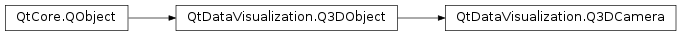

QtDataVisualization.Q3DCamera¶
Synopsis¶
Functions¶
- def
cameraPreset() - def
maxZoomLevel() - def
minZoomLevel() - def
setCameraPosition(horizontal, vertical[, zoom=100.0f]) - def
setCameraPreset(preset) - def
setMaxZoomLevel(zoomLevel) - def
setMinZoomLevel(zoomLevel) - def
setTarget(target) - def
setWrapXRotation(isEnabled) - def
setWrapYRotation(isEnabled) - def
setXRotation(rotation) - def
setYRotation(rotation) - def
setZoomLevel(zoomLevel) - def
target() - def
wrapXRotation() - def
wrapYRotation() - def
xRotation() - def
yRotation() - def
zoomLevel()
Signals¶
- def
cameraPresetChanged(preset) - def
maxZoomLevelChanged(zoomLevel) - def
minZoomLevelChanged(zoomLevel) - def
targetChanged(target) - def
wrapXRotationChanged(isEnabled) - def
wrapYRotationChanged(isEnabled) - def
xRotationChanged(rotation) - def
yRotationChanged(rotation) - def
zoomLevelChanged(zoomLevel)
Detailed Description¶
-
class
PySide2.QtDataVisualization.QtDataVisualization.Q3DCamera([parent=nullptr])¶ Parameters: parent – PySide2.QtCore.QObject
-
PySide2.QtDataVisualization.QtDataVisualization.Q3DCamera.CameraPreset¶
-
PySide2.QtDataVisualization.QtDataVisualization.Q3DCamera.cameraPreset()¶ Return type: PySide2.QtDataVisualization.QtDataVisualization::Q3DCamera.CameraPreset
-
PySide2.QtDataVisualization.QtDataVisualization.Q3DCamera.cameraPresetChanged(preset)¶ Parameters: preset – PySide2.QtDataVisualization.QtDataVisualization::Q3DCamera.CameraPreset
-
PySide2.QtDataVisualization.QtDataVisualization.Q3DCamera.maxZoomLevel()¶ Return type: PySide2.QtCore.float
-
PySide2.QtDataVisualization.QtDataVisualization.Q3DCamera.maxZoomLevelChanged(zoomLevel)¶ Parameters: zoomLevel – PySide2.QtCore.float
-
PySide2.QtDataVisualization.QtDataVisualization.Q3DCamera.minZoomLevel()¶ Return type: PySide2.QtCore.float
-
PySide2.QtDataVisualization.QtDataVisualization.Q3DCamera.minZoomLevelChanged(zoomLevel)¶ Parameters: zoomLevel – PySide2.QtCore.float
-
PySide2.QtDataVisualization.QtDataVisualization.Q3DCamera.setCameraPosition(horizontal, vertical[, zoom=100.0f])¶ Parameters: - horizontal –
PySide2.QtCore.float - vertical –
PySide2.QtCore.float - zoom –
PySide2.QtCore.float
- horizontal –
-
PySide2.QtDataVisualization.QtDataVisualization.Q3DCamera.setCameraPreset(preset)¶ Parameters: preset – PySide2.QtDataVisualization.QtDataVisualization::Q3DCamera.CameraPreset
-
PySide2.QtDataVisualization.QtDataVisualization.Q3DCamera.setMaxZoomLevel(zoomLevel)¶ Parameters: zoomLevel – PySide2.QtCore.float
-
PySide2.QtDataVisualization.QtDataVisualization.Q3DCamera.setMinZoomLevel(zoomLevel)¶ Parameters: zoomLevel – PySide2.QtCore.float
-
PySide2.QtDataVisualization.QtDataVisualization.Q3DCamera.setTarget(target)¶ Parameters: target – PySide2.QtGui.QVector3D
-
PySide2.QtDataVisualization.QtDataVisualization.Q3DCamera.setWrapXRotation(isEnabled)¶ Parameters: isEnabled – PySide2.QtCore.bool
-
PySide2.QtDataVisualization.QtDataVisualization.Q3DCamera.setWrapYRotation(isEnabled)¶ Parameters: isEnabled – PySide2.QtCore.bool
-
PySide2.QtDataVisualization.QtDataVisualization.Q3DCamera.setXRotation(rotation)¶ Parameters: rotation – PySide2.QtCore.float
-
PySide2.QtDataVisualization.QtDataVisualization.Q3DCamera.setYRotation(rotation)¶ Parameters: rotation – PySide2.QtCore.float
-
PySide2.QtDataVisualization.QtDataVisualization.Q3DCamera.setZoomLevel(zoomLevel)¶ Parameters: zoomLevel – PySide2.QtCore.float
-
PySide2.QtDataVisualization.QtDataVisualization.Q3DCamera.target()¶ Return type: PySide2.QtGui.QVector3D
-
PySide2.QtDataVisualization.QtDataVisualization.Q3DCamera.targetChanged(target)¶ Parameters: target – PySide2.QtGui.QVector3D
-
PySide2.QtDataVisualization.QtDataVisualization.Q3DCamera.wrapXRotation()¶ Return type: PySide2.QtCore.bool
-
PySide2.QtDataVisualization.QtDataVisualization.Q3DCamera.wrapXRotationChanged(isEnabled)¶ Parameters: isEnabled – PySide2.QtCore.bool
-
PySide2.QtDataVisualization.QtDataVisualization.Q3DCamera.wrapYRotation()¶ Return type: PySide2.QtCore.bool
-
PySide2.QtDataVisualization.QtDataVisualization.Q3DCamera.wrapYRotationChanged(isEnabled)¶ Parameters: isEnabled – PySide2.QtCore.bool
-
PySide2.QtDataVisualization.QtDataVisualization.Q3DCamera.xRotation()¶ Return type: PySide2.QtCore.float
-
PySide2.QtDataVisualization.QtDataVisualization.Q3DCamera.xRotationChanged(rotation)¶ Parameters: rotation – PySide2.QtCore.float
-
PySide2.QtDataVisualization.QtDataVisualization.Q3DCamera.yRotation()¶ Return type: PySide2.QtCore.float
-
PySide2.QtDataVisualization.QtDataVisualization.Q3DCamera.yRotationChanged(rotation)¶ Parameters: rotation – PySide2.QtCore.float
-
PySide2.QtDataVisualization.QtDataVisualization.Q3DCamera.zoomLevel()¶ Return type: PySide2.QtCore.float
-
PySide2.QtDataVisualization.QtDataVisualization.Q3DCamera.zoomLevelChanged(zoomLevel)¶ Parameters: zoomLevel – PySide2.QtCore.float
© 2018 The Qt Company Ltd. Documentation contributions included herein are the copyrights of their respective owners. The documentation provided herein is licensed under the terms of the GNU Free Documentation License version 1.3 as published by the Free Software Foundation. Qt and respective logos are trademarks of The Qt Company Ltd. in Finland and/or other countries worldwide. All other trademarks are property of their respective owners.